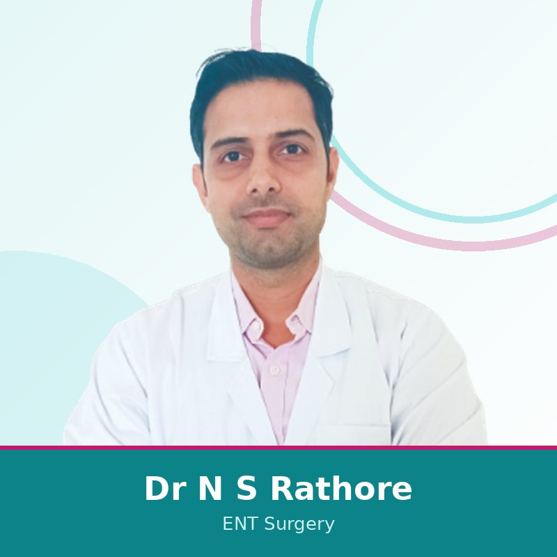

Nine experienced consultants across General and Laparoscopic Surgery, Obstetrics and Gynaecology, Pain Management and Spine, Orthopaedics, Urology, Neurosurgery, ENT, General Medicine, Pathology, working together under one roof. Tap "Book on WhatsApp" on any doctor to send a one-tap appointment request.

Dr Robin Bothra performs a wide range of keyhole and laser procedures: gall bladder stones, hernia and appendix surgery, laser and stapler treatment for piles, fissure and fistula, breast and thyroid surgery, cancer surgery, ZSR circumcision, varicose veins and diabetic foot care. Patients describe their surgery as smooth and well explained, with a faster, less painful recovery.

Dr Chitra Soni cares for women through every stage of health: normal and painless delivery, caesarean section, high-risk pregnancy, laparoscopic gynaecological surgery (hysterectomy, myomectomy, ovarian cyst), diagnostic and operative hysteroscopy, infertility treatment and laser cosmetic gynaecology. She is known for listening, explaining clearly and treating each patient with warmth.

Dr Naveen Soni helps patients live with less pain and, wherever it is safe, avoid open surgery. He offers non-surgical and minimally invasive treatment for slip disc, sciatica, back and neck pain, frozen shoulder, knee and hip pain, migraine, trigeminal neuralgia and nerve-related pain, including ozone discectomy and endoscopic spine techniques. Patients value the time he takes to understand the problem and his calm, conservative approach.

Dr Chirag Jain focuses on joint replacement of the knee, hip and shoulder, arthroscopic (keyhole) joint surgery, and the management of fractures and trauma, using modern implants and minimally invasive techniques. Patients describe him as caring and attentive, clear in explaining the plan and present through their recovery.

Dr Ram Naresh Daga specialises in minimally invasive and laser urological surgery, including treatment for kidney stones, prostate enlargement and urological cancers (URS, PCNL, TURP, TURBT). A former Assistant Professor of General Surgery, he has handled well over a thousand such cases and takes care to choose the least invasive option.

Dr Pavan Jain treats brain tumours, complex and minimally invasive spine surgery, scoliosis, spinal tumours, traumatic spine fractures and degenerative spine disease. He favours minimally invasive, motion-preserving techniques and treats surgery as the last resort, guiding patients through both surgical and non-surgical options.

Dr Natwar Singh Rathore treats the full range of ear, nose and throat conditions for adults and children, from infections, hearing and sinus problems to ENT surgery. Patients value his clear explanations and unhurried, reassuring manner. He consults in English, Hindi and Jaipuri.

Dr Vishnu Gupta cares for adults across the common and chronic conditions of everyday health, including diabetes, thyroid disorders, blood pressure, respiratory and gastric problems, migraine and seasonal illness. Patients value his careful diagnosis, personalised treatment plans and the time he gives to listening.

Dr Vinita Jain leads the hospital's diagnostic laboratory. Her work underpins accurate diagnosis across every department, from routine blood tests and health checks to histopathology and specialised investigations that guide treatment, with reliable, timely in-house reporting under one roof.